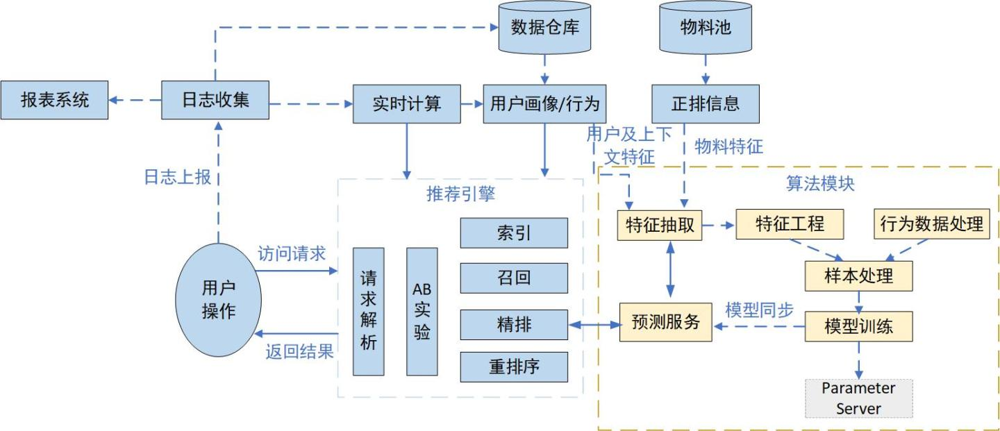
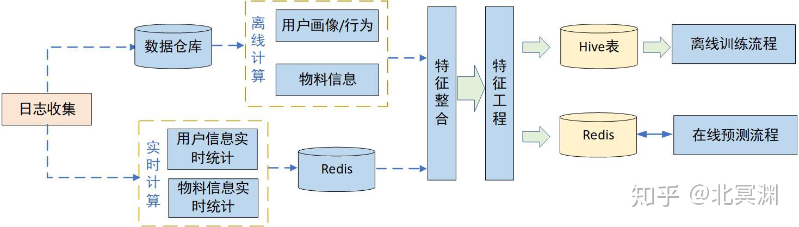
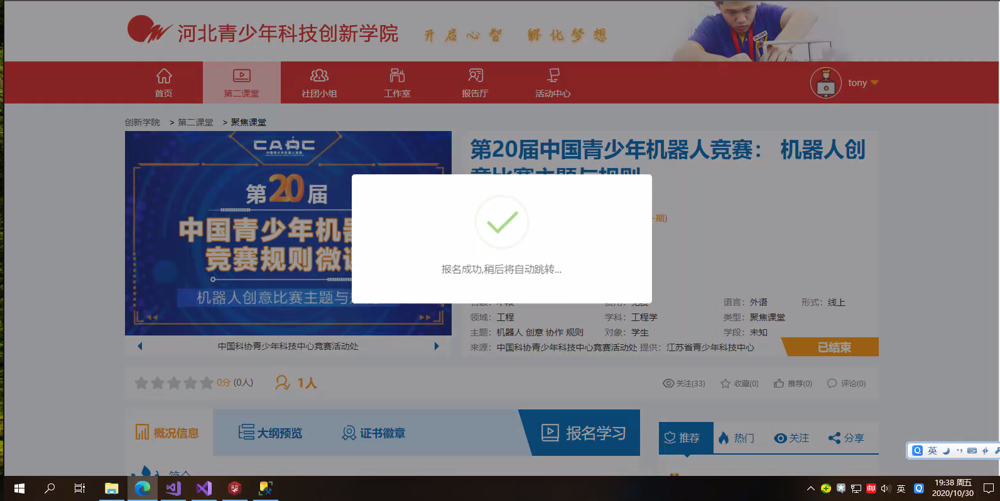
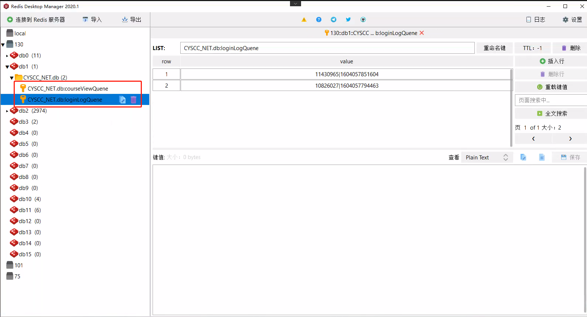
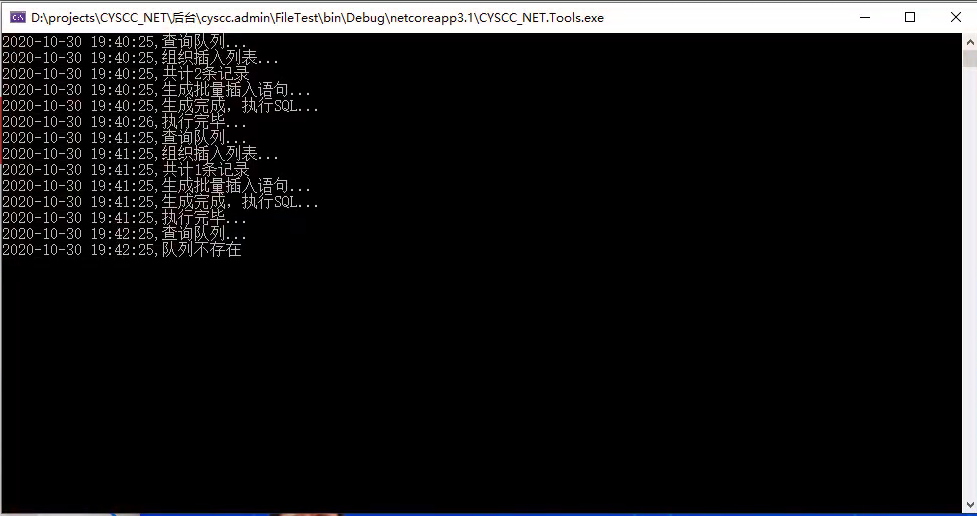
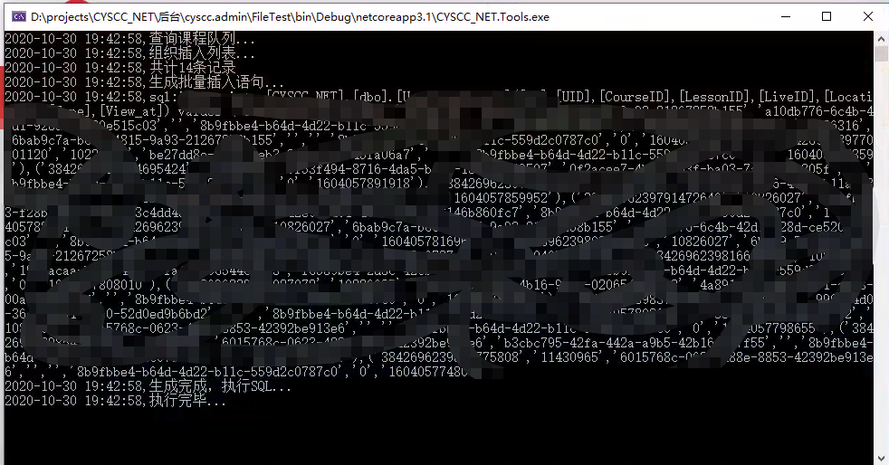
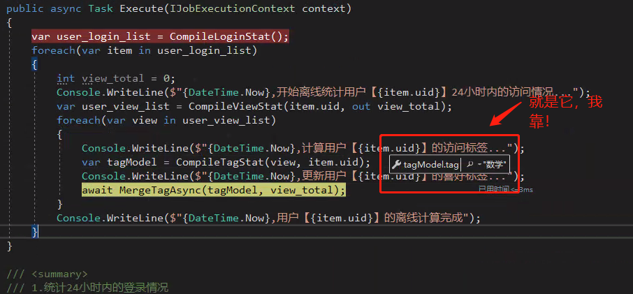
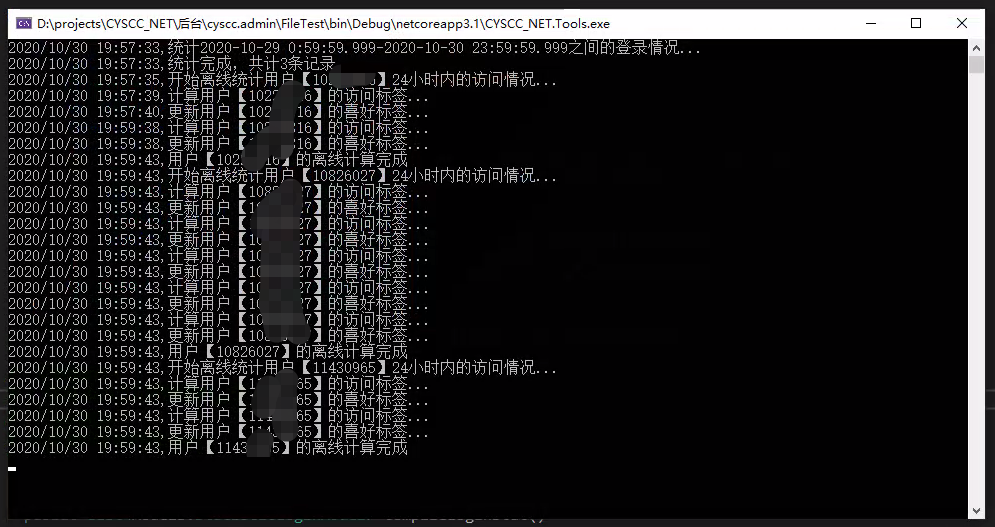
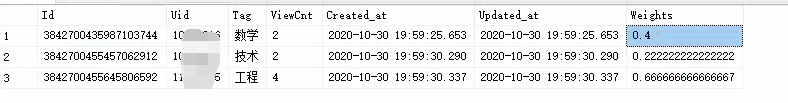

转眼10月份都要过完了，翻了翻博客记录，上次写博客都是9月8号了。
后来琢磨了一下，10号就进项目了，做了3周多，然后紧接着就又进到另外一个项目，就这么折腾了俩项目，转眼10月份都快过完了。
我其实一直记着写东西呢，但翻了翻之前写的，框架或者插件的用法偏多，昨天翻的时候，就感觉像是再翻自己的qq空间，略显幼稚。就想着换换思路，来点不一样的！
年中的时候，记得在设计自己负责的一个项目的时候，有吹过牛说要做一个内容推荐的东西，然后就一直没弄，哈哈！
其实主要是光脑子里有想法，但是没招术，不会，别说大学了，高中的数学我都忘得那叫一个干净。。。
这周，前面提到的那俩事儿算是了了，稍微有点空闲时间，就琢磨着把这个东西落实一下。
我也看了一些有关推荐算法的文章，也了解了一些概念性的基础知识，涉及到一些高深的数学和统计学概念，理解不是很深，而且到算法设计的层面，也不是一篇两篇文字能说得清到的明的，最终的是，我这个设计也还没完全完成，就是想赶在11月之前写出点东西来，要不新项目就又来了，哈哈！
好了，来正题吧
先来看两张图，是我从知乎上看到的


前面提到，看了很多文章，但理解都不深，但要做出东西来，总要有个方向，这两个流程图我感觉还是多少给我指明了点方向。
要完成个性化的推荐，数据是基础，其次有了数据之后，还要分析数据，总结用户的访问规律，最后就可以针对性的给出推荐内容了。
所以，方向就清晰了许多，要把大象装冰箱，总共分几步？
第一步，先收集用户数据，主要包括登录数据和访问数据，而在一个有一定用户规模的系统中收集这些数据，肯定是会造成一定量请求压力和读写压力，所以为了削掉写数据带来的流量高峰，我用了redis的队列结构。其实标准的做法是使用消息队列，比如rabbitmq或者kafka之类的，但我这里用到的队列数据不会特别庞大，引入新的中间件到系统的框架里来，会增加系统的复杂性，给后续的运维带来一定的困难，我们也是个小公司，算是用DevOps的模式来进行技术团队的管理，因此使用redis的队列来充当“消息队列”的角色完全够用。
这样，采集到的记录数据暂存到队列里，不会造成流量突然的激增而导致系统瘫痪。看下采集后的截图


第二步，数据同步，图2里的两个队列分别是具体的课程浏览数据和登录数据。而队列里的数据肯定不能一直在那拍着，需要定期的把队列清空，然后新的数据进来，然后在清空，循环往复。
而清空的过程，就是一个持久化存储的过程，我这里是通过Quatz设定了一个定时的Schedule，把队列数据迁移到数据库里。


第三步，
采集到这两个数据后接下来就可以进行数据分析了，因为对那些高深的分析算法还弄不明白，我就先来点简单的。
我们这个课程数据，本身预设了两个标签，一个是自定义的标签，表明课程的关键信息。还有一个是领域标签，就像是数学，物理，语文等这些学科，前面的小标签算是这些大标签下的子类，但是不论是语义还是内容上都会有交叉，所以上来就分析这个小标签，难度有些大，主要是交叉学科的时候不好做划分，还会涉及到一些NLP相关的知识，所以我这个1.0的版本就先从这个大标签下手。
我的方法是，收集到这些浏览数据后，对数据进行一个宽泛的数据划分，然后计算访问权重，再根据权重的大小，得出用户感兴趣的类型学科是那个。
看下我这边的分析结果



这样，便得到了一个简单的用户画像模型，再根据模型结果，定向的给用户推送内容就OK了。
目前，我就做到了这一步，推送那步还没做，也不知道我这么干最后结果到底是不是想要的。
但我感觉这个路应该是对的，然后就是推荐的时候也应该有算法支撑，不能说用户对数学感兴趣就只推荐数学的内容，这也不够合理，而是应该合理的添加一些噪声数据来影响推荐结果，达到感人的千人千面效果。
好了，大周末挺累的，等下篇再接着聊。
不过下篇可能又得再过一阵了，小老弟又来活了。。
哎，苦逼的打工人。